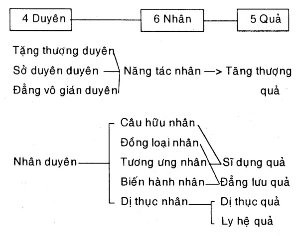
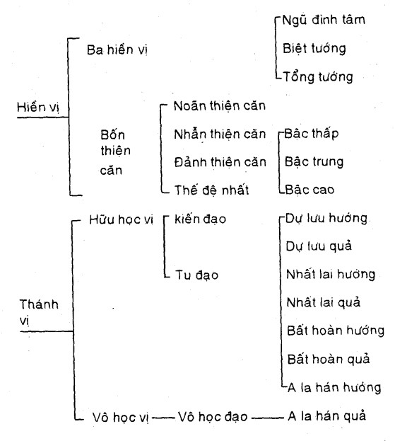

|
Tâm lý học Phật giáo Thích Tâm Thiện |
|
BuddhaSasana Home Page |
Vietnamese, with Unicode Times font |
|
|
Tâm lý học Phật giáo Thích Tâm Thiện |
|
PHẦN II - TÂM LÝ HỌC PHẬT GIÁO II.1. CHƯƠNG 1: VÀI NÉT VỀ LỊCH SỬ TÂM LÝ HỌC PHẬT GIÁO * * * Sự hình thành và phát triển tâm lý học Phật giáo Sự hình thành và phát triển tâm lý học Phật giáo là một quá trình vừa diễn dịch vừa xây dựng kéo dài suốt hàng thế kỷ trong lịch sử truyền thừa Phật giáo kể từ thời Đức Phật. Ở đây, diễn dịch là sự diễn đạt bản ý của Phật và xây dựng là sự kiến lập thành hệ thống đặc thù của các vị Tổ sư, và luận sư Phật giáo trên cơ sở phù hợp với những giáo huấn của Phật. Do đó, có thể phân chia các giai đoạn về sự hình thành và phát triển của tâm lý học Phật giáo như sau: 1- Thời kỳ Đức Phật (563-463 B.C) và Phật giáo Nguyên thủy - Phật giáo Nguyên thủy (Theravada) là thời kỳ Đức Phật còn tại thế đến sau khi Ngài diệt độ khoảng 100 năm, như vậy thời kỳ này chỉ kéo dài từ 150 đến 200 năm. Trong thời kỳ này, những giáo lý của Phật được xác định cụ thể trong giáo thuyết về 12 Nhân duyên hay Duyên khởi (Paticcasamupàda), 5 uẩn (Skandhas) và 4 Thánh đế (Cattàriàriyasaccàni) (bao gồm 37 phần hộ đạo hay Đạo đế). Do đó, đứng về góc độ triết học và tư tưởng, thì nội dung Phật giáo hàm chứa trọn vẹn trong 12 nhân duyên, 5 uẩn và 4 Thánh đế, bao gồm cả hai mặt nhận thức và hành động (tu tập), thế gian và xuất thế gian. Nói khác đi, 12 nhân duyên, 5 uẩn và 4 Thánh đế được biểu thị cả hai mặt phương tiện và cứu cánh, hay tương đối và tuyệt đối trên cùng một thực tại-hiện hữu. Đây là nền tảng của cả tư tưởng triết học và đời sống thực tiễn - Phật giáo. Về nội dung của những giáo lý trên, Đức Phật trình bày về con người và thế giới thực tại khách quan theo nguyên lý Trung đạo (Majjhimà - patipadà) bất khả phân ly giữa Danh (tâm lý) và Sắc (vật lý), hay giữa Chân lý công ước (Conventional truth) và Chân lý tuyệt đối (Absolute truth). Nguyên lý này được Nagarjuna, qua "Trung quán luận" (Màdhyamikasàstra) gọi là nguyên lý Nhị đế hay Bất nhị (Advaya). Đây cũng là nguyên tắc thuyết giáo mà Đức Phật đã vận dụng trong suốt cuộc đời hành đạo của Ngài. Đặc biệt trong giáo lý 12 nhân duyên, Đức Phật trình bày về con người như một tiến trình hiện hữu (process of becoming) của vòng tròn sinh hóa của cả tâm lý và vật lý qua hình thức của:
Trên đây là nội dung của 12 chi phần nhân duyên, và, khi một chi phần (như vô minh) hiện khởi thì toàn bộ 12 nhân duyên cùng khởi - đây là con đường duyên khởi (hay lưu chuyển). Ngược lại, khi một chi phần (như vô minh) đoạn diệt thì toàn bộ 12 nhân duyên đoạn diệt. Đây là con đường hoàn diệt hay còn gọi là Diệt đế (Nirodha - àriyasacca) - Niết bàn. Tuy nhiên, Niết bàn không có nghĩa là tiêu tan tất cả, mà trên cơ sở cơ bản nhất, đó là sự đoạn diệt tham, sân, si hay là vô minh. Đức Phật chứng đắc Niết bàn tối thượng ngay khi Ngài còn sống ! Như thế, qua nội dung của 12 nhân duyên, ta có thể xác định thế nào là tâm lý học Phật giáo thời Nguyên thủy. Nó quan trọng đến nỗi Đức Phật, trong Tương Ưng I, tuyên bố rằng: "Nếu không liễu tri (biết rõ) về năm uẩn hay 12 nhân duyên, thì không thể thoát ly sinh tử luân hồi". Ở đây, năm uẩn bao gồm: sắc, thọ tưởng, hành, và thức. Nó tương tự như 12 nhân duyên: Vô minh và hành = Hành uẩn Thức = Thức uẩn Danh sắc = Năm uẩn Thọ = Thọ uẩn Ái, thủ, hữu = Hành uẩn Sinh, lão-tử = Năm uẩn Như thế hệ thống tâm lý giáo dục Phật giáo thời nguyên thủy được Đức Phật trình bày rất cụ thể và rõ ràng qua giáo lý 12 nhân duyên và 5 uẩn theo nguyên tắc của 4 Thánh đế (Khổ đế [kết quả], Tập đế [nguyên nhân], Diệt đế [kết quả] và Đạo đế [nguyên nhân]). Đây là phần trọng tâm của giáo lý đạo Phật, cũng là phần giáo lý nhất quán và xuyên suốt cả lịch trình tư tưởng Phật giáo, từ Nam truyền đến Bắc truyền, từ nguyên thủy cho đến ngày nay với khoảng thời gian hơn 25 thế kỷ qua. 2- Thời kỳ Phật giáo Abhidhamma (271 B.C - 200 AD) Phật giáo Abhidhamma (luận thư) là thời kỳ Phật giáo được phân chia theo nhiều hệ thống, bộ phái khác nhau. Theo nhiều nguồn sử liệu, thời kỳ này Phật giáo được phân thành 20 bộ phái, và đại biểu chính thức là Thượng tọa bộ (Sthaviravada) và Đại chúng bộ (Màhasànghika). Sự phân hóa này diễn ra song song với các thời kỳ kết tập kinh tạng Phật giáo. Có 4 thời kỳ chính như sau: a) Lần thứ I: Sau Phật diệt độ khoảng một tuần, đại hội kết tập này do ngài Đại Ca Diếp (Maha-Kacyapa) làm chủ tọa, đại biểu gồm có 500 vị A La Hán, tập hội tại thành Vương Xá (Ràjagaha), kinh đô nước M Kiệt Đà (Magadha) b) Lần thứ II: Sau Phật diệt độ 100 năm, đại hội kết tập này do các ngài Revata, Sàmbhùta, Yasa Sumana, Khùjjasobhita, Sàlha, Vàsabhagàmi, và Sabhakàmi làm chủ tọa đoàn, đại biểu gồm có 700 vị A La Hán, tập hội tại thành phố Tỳ-xá-lỵ (Vesali). Tại đại hội này, giáo đoàn Phật giáo chính thức được chia thành hai bộ: Thượng tọa bộ và Đại Chúng Bộ (sau đó, từ hai bộ này tiếp tục phát sinh ra 20 tiểu bộ). c) Lần thứ III: Sau Phật diệt độ 218 năm (khoảng năm 325 trước Tây lịch), đại hội kết tập này do vua Asoka tổ chức và tài trợ. Vua mời ngài Mục Kiền Liên Tử Đế Tu (Moggaliputa-tissa) tại núi Ahogànga làm chủ tịch hội nghị. Đại biểu gồm có 1000 vị Tăng sĩ được tuyển chọn, và tập hội tại thành Hoa Thị (Pataliputra). d) Lần thứ IV: Sau Phật diệt độ 400 năm (khoảng đầu thế kỷ thứ II Tây lịch), đại hội kết tập này do vua Kaniska tổ chức và tài trợ, cùng với sự cộng tác của ngài Hiếp Tôn Giả (Parsva). Đại hội này do ngài Thế Hữu (Vasumitra) làm chủ tịch, chủ tọa đoàn gồm các vị Đại đức Dharmatràta, Ghosa, Baddhadeva, và Parsva. Đại biểu gồm 500 vị đại học giả uyên bác, thông đạt cả tam tạng. Đại hội được tổ chức tại tinh xá Hoàn Lâm (Kundalavana-Samgharàma) thuộc nước Kasmitra. Nguyên nhân của sự kết tập kinh điển và phân hóa giáo đoàn thành các bộ phái là do quan điểm bất đồng, sai biệt về giáo lý của Phật trong sự nhận thức của các vị đệ tử. (40) Về khái niệm Phật giáo Abhidhamma (A-tỳ-đạt-ma) hay Phật giáo Luận thư, là do các bộ phái Phật giáo có những quan điểm khác nhau về giáo lý của Phật. Và những quan điểm đó được trình bày thành hệ thống triết luận tư tưởng riêng biệt của từng bộ phái. Do đó, đây là thời kỳ phát sinh các Luận thư - sự giải minh về giáo lý của Phật theo quan điểm của các vị minh triết Phật giáo cách thời Đức Phật một khoảng thời gian lâu dài, nên gọi là Phật giáo Abhidhamma. Về sự hình thành và phát triển của Phật giáo Luận thư được học giả Kimura Taiken (41) ghi nhận như sau: "A-tỳ-đạt-ma, tức là mục đích "đối pháp", có nhiệm vụ tập hợp các pháp nghĩa (của Phật) lại, rồi đem phân loại, định nghĩa, giải thích và phân biệt. Như vậy, các phương pháp nghiên cứu đó dù cho không có sự hưng khởi của bộ phái, nó cũng có khả năng phát sinh. Không những thế, chính trong khi áp dụng phương pháp nghiên cứu đó, tự nhiên đã đưa đến sự bất đồng ý kiến làm nguyên nhân cho sự phân phái". Và Kimura Taiken trình bày về hướng phát triển của Phật giáo Luận thư, có thể tóm tắt như sau: a) Nguồn gốc và sự hình thành. Luận thư, trước hết, phát sinh từ những lời giáo huấn rõ ràng, trong sáng, rất minh bạch, dung dị... của Phật và đời sống minh triết, thánh thiện của Ngài. Luận thư lúc đầu vốn được xem là phương pháp nghiên cứu giáo huấn của Phật, do đó, đối tượng nghiên cứu là kinh - hay lời dạy được nói ra bởi chính Đức Phật. Ở đây, Luận thư không có địa vị độc lập mà hoàn toàn phụ thuộc vào kinh. Luận thư có thể được xem như là kinh được diễn đạt rộng bởi các vị đệ tử của Phật. Tuy nhiên, về mặt lịch sử kết tập, thì chỉ có Kinh và Luật là rõ ràng, còn Luận thư thì ít được đề cập đến, chỉ có cá nhân san định hoặc trứ tác. b) Sự phát triển. Theo đánh giá của Kimura Taiken (42), có thể chia sự định hình của Luận thư Abhidhamma qua bốn giai đoạn: * Giai đoạn kết tập: là giai đoạn luận thư hóa kinh (giáo huấn của Phật) qua phương pháp biên tập thời đó của Giáo hội, chẳng hạn như bộ Tăng Nhất A Hàm, Tạp A Hàm, v.v... Nói chung, ở giai đoạn kết tập, thì Luận thư vẫn giữ hình thức của khế kinh. * Giai đoạn giải minh giáo huấn của Phật: Giai đoạn này Luận thư không còn ở hình thức khế kinh nữa, mà đã chuyển sang định nghĩa, phân loại, phân biệt và chú giải giáo huấn của Phật. Lúc này, khế kinh chỉ đóng vai trò bối cảnh, tuy nhiên, Luận thư vẫn chưa độc lập bởi những kiến giải (deconstructions) mới, mà chỉ tập chú vào nội dung như đã được nói trong khế kinh. * Giai đoạn độc lập hóa: Giai đoạn này, Luận thư đã rời bỏ khế kinh, không còn thảo luận về những lời giáo huấn của Phật một cách riêng lẻ nữa, mà đã đi sâu vào thể tài độc lập, lấy các đề mục của kinh làm chủ đề và phân tích, biện giải, giải minh theo qui tắc của Luận thư (nghiên cứu và phân tích văn bản). Đây là lý do phát sinh nhiều quan điểm, nhiều luận giải độc đặc, đa thù theo tính cách và chủ trương của mỗi bộ phái. * Giai đoạn học thuyết hóa: Đó là giai đoạn toát yếu hóa và cương yếu hóa về những luận giải của Luận thư, làm cho chủ trương của mỗi bộ phái rõ ràng, minh bạch, và mỗi bộ phái thì có những học thuyết riêng - như "Thắng pháp tập yếu luận" của Anuttara, "Câu xá luận" của Vasubandhu v.v... Giai đoạn này diễn ra khoảng thế kỷ thứ II, thứ III sau Tây lịch, cũng là thời kỳ các bộ phái Hinayàna được thành lập. c) Phương pháp xử lý của Luận thư: Lúc đầu, Luận thư là sự tập hợp các câu kinh và các giải thích về các câu kinh đó. Ở thời điểm này, kinh (lời dạy cụ thể của Đức Phật) được xem là chứng lý tối thượng và tuyệt đối của Luận thư. Tuy nhiên, Luận thư không chỉ được dừng lại ở đó mà nó còn đi xa hơn nữa là giải minh toàn bộ tư tưởng được hàm chứa trong một hoặc nhiều câu kinh cụ thể. Do đó, phương pháp xử lý này đưa đến sự đi sâu vào phê phán hoặc phân tích, đánh giá, thẩm định... về nội dung của kinh. Sự kiện này một mặt vừa làm cho kinh trở nên phong phú, nhưng mặt khác có lúc nó cũng đi quá đà và thoát ly hẳn ý kinh. Đây là lý do "Luận đại tỳ bà sa" (Abhidhamma - màhavibhàsà - sàstra) quyển 51 của Hữu Bộ nói rằng: "Kẻ nào chấp chặt vào từ lời kinh mà không thông đạt được chân lý của nó thì gọi là trư văn Sa môn (kẻ chấp vào văn tự)". (43) (xem tóm tắt một số nội dung của luận thư ở phần sau). 3- Thời kỳ Phật giáo Mahayama (Đại thừa) Sau Phật diệt độ khoảng 800 năm, tức vào khoảng thế kỷ thứ III Tây lịch, có các bậc Đại luận sư như ngài Nagarjuna (Long Thọ), Nàgasena (Na Tiên), Vasumitra (Thế Hữu) và Asvaghosa (Mã Minh) v.v... ra đời; và đây là những gương mặt vĩ đại phát huy giáo nghĩa Mahayana (Đại thừa) trong lịch sử tư tưởng, triết học Phật giáo. Đến khoảng cuối thế kỷ thứ IV Tây lịch, có ngài Asanga (Vô Trước) và Vasubandhu (Thế Thân). Đây là hai vị Đại luận sư (anh em ruột) tiêu biểu cho dòng triết học Duy thức - tức tâm lý học Phật giáo - Mahayàna. Đặc điểm của thời kỳ này là sự ra đời của hàng loạt các bộ kinh lớn như Hoa Nghiêm, Bát Nhã, Pháp Hoa, Niết Bàn v.v... cũng như các bộ Luận thư trứ danh như: "Du già sư địa luận" (Yogàcarya-bhùmi-sàstra), "Nhiếp Đại thừa luận" (Mahàyànasampari-graha-sàstra), "Duy thức tam thập tụng luận" (Vidyàmàtrasiddhi-tridasa-sàstra-kàrika) v.v... Tuy nhiên, điểm khác biệt cơ bản của Phật giáo Mahayana và thời kỳ Hinayana (bao gồm thời kỳ Abhidhamma) là các luận thư và kinh tạng của Phật giáo Mahayana hoàn toàn không mâu thuẫn, khác biệt nhau về nội dung giáo lý. Sự giống nhau về ý nghĩa (hay bản ý của Phật) trong kinh tạng và luận thư của Mahayana là điểm độc đáo và rất sáng tạo của các nhà Đại thừa (Mahayanists). Ở đây, cần ghi nhận rằng, tính chất cơ bản trong nội dung giáo lý như được trình bày trong các hệ thống kinh tạng và luận thư của Phật giáo Mahayana cũng là những gì được hàm chứa trong nội dung giáo lý của Phật giáo thời Nguyên thủy (Theravada), hay nói cụ thể là trong kinh tạng Nikaya và A Hàm; đây là điểm nhất quán và xuyên suốt trong hệ thống tư tưởng Phật giáo. Và điểm khác biệt duy nhất của tạng thư Mahayana so với tạng thư của Theravada là cách trình bày và sự mở rộng ý nghĩa về Phật, Pháp và Tăng theo quan điểm phóng khoáng và đa thù giữa chân đế và tục đế; cả hai xuất hiện như một tổng thể bất khả phân ly. Do đó, ở tạng - thư của Mahayana không có sự chống trái về mặt nội dung tư tưởng. Một điểm đặc sắc khác được phô diễn trong tạng-thư của Mahayana là giữa kinh tạng và luận thư bổ sung cho nhau và cùng tập chú về một thế giới tâm lý của cả sự thanh tịnh và cấu uế. Điều này được cụ thể qua các học thuyết trung tâm của kinh tạng và luận thư. Tỉ dụ, kinh Bát Nhã lấy "Vọng tâm Duyên khởi" làm tiền đề đi vào hiện quán, kinh Hoa Nghiêm thì lấy "Thanh tịnh tâm duyên khởi" làm tiền đề, Duy thức học thì đi trực tiếp và bao quát các vấn đề về tâm lý v.v... Sự bổ sung và cùng chuyên chú vào thế giới của TÂM trong kinh tạng và luận thư Mahayana này cho thấy tính chất phong phú và đa dạng về hệ thống phân tích tâm lý học Phật giáo trong tư tưởng Mahayana. 4- Sự tập thành của Luận thư (Abhidhamma) Như đã trình bày, luận thư Phật giáo ra đời song song với quá trình kết tập kinh tạng và phân hóa giáo đoàn. Tuy nhiên, vào thời kỳ kết tập lần thứ nhất, luận thư chưa xuất hiện. Đến thời kỳ kết tập lần thứ hai, luận thư đã xuất hiện nhưng chưa độc lập thành một hệ thống riêng biệt, còn tùy thuộc nhiều về kinh tạng. Cho đến khi Thượng tọa bộ chính thức ra đời, thì luận thư mới thực sự được thành lập thành một tạng riêng biệt (trong ba tạng Kinh - Luật - và Luận) của Phật giáo. Về luận thư của Phật giáo Hinayana, có thể tóm tắt một số luận thư nổi tiếng của Thượng Tọa bộ như sau:
Đến thời vua Kaniska, các học giả Hữu bộ lại chế tác lại giáo nghĩa của "Phát trí luận" dưới nhan đề "Đại tỳ bà sa luận" (Abhidhamma -mahàvibhàsà -sàstra) gồm 200 quyển. Và bộ "Đại tỳ bà sa luận" được xem như là nền tảng giáo lý của Hữu bộ. Nhưng đến thời đại ngài Nàgàrjuna (khoảng đầu thế kỷ thứ III. Tây lịch, tức sau Phật diệt độ hơn 700 năm), thì bộ luận này bị phản ứng bởi tư tưởng của ngài Nàgarjuna, Deva và Ràhula-bhadra. Trước viễn cảnh đó, Hữu bộ nỗ lực củng cố tư tưởng và học thuyết của mình bằng cách biên soạn lại một số luận thư để làm căn bản cho giáo nghĩa của Hữu bộ, thay cho luận thư Đại tỳ bà sa. Gồm có:
Đến khoảng thế kỷ thứ V. TL, lại có các bộ luận như:
* Về luận thư của Phật giáo Mahayana Như đã trình bày, trong hệ thống luận thư của Mahayana tuyệt nhiên không có sự phê phán, phê bình hay chống trái lẫn nhau, mà chỉ có sự mở rộng và bổ sung cho nhau. Do đó, về luận thư, có thể tóm tắt các trứ tác, biên soạn theo mỗi tác giả như sau: Các luận thư Phật giáo thuộc hệ thống Hinayana và Mahayna: * Các luận thư được trước tác bởi ngài Vasumitra:
* Các luận thư được trước tác bởi ngài Asvaghosa:
* Các luận thư được trước tác bởi ngài Nàgàrjuna:
* Các luận thư được trước tác bởi ngài Deva
* Các luận thư được trước tác bởi ngài Maitreya (49)
* Các luận thư được trước tác bởi ngài Asanga:
* Các luận thư được trước tác bởi ngài Vasubandhu
Trên đây, chúng ta vừa khảo sát sơ lược về sự hình thành và quá trình phát triển tâm lý học Phật giáo qua các thời kỳ Phật giáo Nguyên thủy, Phật giáo Luận thư, và Phật giáo Đại thừa (Mahayana). Tất nhiên, như đã được giới hạn ngay từ đầu, chúng ta chỉ khảo sát về tâm lý học Phật giáo qua góc độ của Luận thư (Luận tạng), đặc biệt là hệ thống triết học Duy thức của Mahayana. Tuy nhiên, để có một cái nhìn tổng quát về tâm lý học Phật giáo; ở đây, người viết xin tóm lược một số nội dung cơ bản về tâm lý học Phật giáo qua ba luận thư như sau:
* * * CÁC HỆ THỐNG TIÊU BIỂU VỀ TÂM LÝ HỌC PHẬT GIÁO A/ Đại cương về Thắng pháp luận (Abhidhammatthasangaha) Bộ "Thắng pháp tập yếu luận" này là một công trình khảo cứu, tóm tắt và hệ thống hóa nội dung của bảy bộ luận thuộc Hinayana bởi một vị Tăng sĩ người Ấn Độ, tương truyền là ngài Anuruddha (A Nậu Đa La) (51) Về mức độ chính xác của công trình tóm tắt và hệ thống hóa này không thể hoặc khó có thể minh định rõ ràng, vì chúng ta không có điều kiện để đọc hết bảy bộ luận đó, ít ra là về phía người viết. Tuy nhiên, theo truyền thống Nam phương Phật giáo, thì bộ "A tỳ đàm thắng pháp luận" này là một trong những nền tảng triết học cơ bản nhất của Nam phương Thượng Tọa bộ. Do đó, chúng tôi dựa vào bộ luận này - và đặc biệt là thông qua bản dịch của HT. Thích Minh Châu (52), một học giả có thẩm quyền chuyên môn về tạng thư Pàli, ít nhất là đối với người Việt Nam - để trình bày đại cương về tâm lý học Phật giáo theo quan điểm của Nam phương - Thượng Tọa bộ. (I) DÒNG CHẢY CỦA TÂM THỨC QUA A TỲ ĐÀM THẮNG PHÁP TẬP YẾU Có ba loại tâm cơ bản là: tâm tham, tâm sân và tâm cuồng si. 2- Tâm vô nhân (Ahetukacitta): Có ba loại: Tâm quả bất thiện vô nhân, tâm quả thiện vô nhân và tâm duy tác vô nhân. 3- Tâm dục giới bất tịnh: Có hai loại: Tâm bất thiện và tâm vô nhân. 4- Tâm (hữu nhân) dục giới thanh tịnh: Có ba loại: tâm thiện, tâm quả, tâm duy tác. Cả dục giới thanh tịnh và bất tịnh đều thuộc về tâm hữu nhân. 5- Tâm sắc giới (Rùpàvacaracitta): Có ba loại: Tâm thiện, tâm quả, và tâm duy tác. 6- Tâm vô sắc giới (Arùpàvaracitta): Có ba loại: tâm thiện, tâm quả, và tâm duy tác. Cả ba loại tâm trên của sắc giới và vô sắc giới đều gọi là tâm thế gian (hiệp thế) 7- Tâm đạo siêu thế (Lokattaracitta): Có 4 loại: tâm của cảnh giới Sơ thiền (ly sanh hỷ lạc), Nhị thiền (định sanh hỷ lạc), Tam thiền (ly hỷ diệu lạc) và Tứ thiền (xả niệm thanh tịnh) (53) 8- Tâm quả siêu thế (dị thục siêu thế): Có 4 loại: tâm của quả vị Sơ thiền (Dự lưu quả), Nhị thiền (Nhất lai quả), Tam thiền (Bất lai quả) và Tứ thiền (A la hán quả) Cả tâm đạo siêu thế và quả siêu thế gọi chung là tâm siêu thế. Và, cả tâm thế gian (hợp thế) và siêu thế gian (siêu thế) được gọi là Tâm (citta). 8 phân loại trên của tâm được gọi là Tâm Vương, tức là cội nguồn của Tâm. (II) TÁC NĂNG TRONG DÒNG CHẢY CỦA TÂM (TÂM SỞ HỮU) 1- Tâm sở biến hành (Sabbacittasàdhàranà). Có 7 loại tâm sở: xúc (Phasso), thọ (Vedanà), tưởng (Sannà), tư (Cetanà), nhất tâm (Kaggatà), mạng căn (Jivitindriyam) và tác ý (Manasikàra) 2- Tâm sở biệt cảnh (Akusalacetasika). Có 6 loại tâm: Tầm (Vitakka), tứ (Vicàra), thắng giải (Adhimokkho), tinh tấn (Viriyam), hỷ (Piti) và dục (Chando). Cả tâm sở hữu biến hành và biệt cảnh gọi là sở hữu tự (chủ thể), tha (đối tượng). 3- Tâm sở bất thiện (Akusalacetasika). Có 14 loại:
4- Tâm sở thiện (Tịnh quang) (Sabhanacetasika). Có 19 loại:
(III) HIỆN HỮU (PHÁP) QUA A TỲ ĐÀM THẮNG PHÁP TẬP YẾU 1- Sắc cơ bản (Bhùta - rupam). Có 4 loại: Đất (Pathavi - dhàtu), nước (Àpo - dhàtu), gió (Vàyo - dhàtu) và lửa (Tejo - dhàtu). 2- Sắc chủ thể (Pasàda-rùpam). Có 5 loại: mắt (Cakkhu), tai (Sotam), mũi (Ghànam), lưỡi (Jihà), và thân (Kàyo). 3- Sắc đối tượng (hay Hành cảnh, Gocararùpam). Có 5 loại: Sắc (Rùpam), thanh (Saddo), hương (Gandho), vị (Raso), xúc (Photthabbam). 4- Sắc bản tính (Bhàvarùpam). Có 2 loại: Nam tính (Purisattam); nữ tính (Itthattam). 5- Sắc tâm sở y (Hadayrùpam). Llà cơ cấu nền tảng của tâm thức (Hadayavatthu). 6- Sắc sinh mạng (Jivitarùpam). Là mạng căn, tức là thân thể và các quan năng (Jivitindriyam). 7- Thực sắc (Ahàra-rùpam). Là đoàn thực (kabalinkàro-àharo) cũng gọi là thực tố. Sắc tâm sở y, sắc sinh mạng và thực sắc còn được gọi là thân biểu và khẩu biểu. Như vậy 18 loại sắc pháp trên được phân loại theo tự tánh (Sabhàvarùpam), tự tướng (Salakkhana - rùpam), sở tạo (Nipphannarùpam), sắc sắc (Rùpa - rupam) và tư duy sắc (Sammasanarùpam). Sắc là vật chất, là những gì thuộc vật lý. Do đó tự tánh sắc là những gì có tính chất nóng , lạnh, cứng, ướt, âm, dương v.v... Sắc tự tướng là chỉ cho vô thường, vô ngã của sắc tướng. Đó là sự diễn biến của sinh, trụ, dị, diệt; thành, trụ, hoại, không... Các pháp thuộc về tâm (tâm lý) và sắc (vật lý) gọi chung là Hữu vi pháp (Sankhatam). Và ngược lại, các pháp vượt ngoài diễn biến chế định của tâm lý và vật lý, không bị giới hạn, chế định bởi sinh và diệt, thì được gọi là Vô vi (Asamskrta). Các pháp hữu vi được gọi là Tục đế, các pháp vô vi (như Niết Bàn) được gọi là Chân đế. (IV) Nhận xét chung về Thắng pháp luận Ở trên chúng ta vừa trình bày tóm lược một số thể cách và các danh từ diễn đạt cơ bản về tâm lý học theo Thắng pháp tập yếu luận của Nam phương Thượng Tọa bộ. Về các danh từ sẽ được giải thích rõ chung với phần trình bày về Duy thức - Tâm lý học của Đại thừa, trong trường hợp của những khái niệm đồng nghĩa. Ở đây, chỉ trình bày tóm tắt một số nội dung "tư tưởng" cơ bản của luận thư này. Trước hết, chúng ta thấy rằng, Thắng pháp luận cắt nghĩa và giải minh tâm lý học qua bốn khái niệm cơ bản, đó là: (a) Tâm (Citta), (b) tâm sở (Cetasika), (c) sắc (Rùpa) và (d) Niết bàn. Qua bốn khái niệm trên, con người theo Thắng pháp luận trước hết là một con người bao gồm tâm thức (tâm lý) và sắc pháp (vật lý). Điều này tương tự như hợp thể của 5 uẩn (Pancaskandhas) trong Phật giáo Nguyên thủy, hay chính những giáo huấn của Phật trong Nikàya. Tuy nhiên, trong năm uẩn, Sắc uẩn (Rùpa) thuộc về sắc pháp (thế giới vật lý), 4 uẩn còn lại (thọ, tưởng, hành và thức) thuộc về tâm pháp (thế giới tâm lý). Trên cơ sở của Tâm pháp này, luận thư đã đi sâu vào phân tích thế giới của tâm lý và các hiện tượng diễn biến của nó qua 89 hay 121 loại tâm và 52 tâm sở. Sự phân tích này được dựa vào cảnh giới (trạng thái) của tâm lý qua các cấp độ như: cõi dục, cõi sắc, cõi vô sắc và siêu thế, hay được cụ thể hóa theo tác năng hoạt động như: tâm thiện, tâm bất thiện, tâm vô nhân, tâm tịnh quang; hoặc như: tâm thiện, tâm dị thục, tâm duy tác - Theo tác năng dẫn khởi sự tái sinh hay không... Bên cạnh đó, các loại tâm sở (tác năng của tâm vương) như: xúc, thọ, tưởng, tư, mạng căn, nhất tâm và tác ý luôn luôn cùng hiện khởi cùng với sự tri giác của mắt, tai, mũi, lưỡi và thân (5 căn). Với sự phân tích chi tiết như thế, luận thư Abhidhamma đã xây dựng lên một lộ trình tâm (Cittavithi) thông qua sự sinh và diệt trong 16 sát na tâm:
Đây là lộ trình của tâm, nó là sự hiện khởi và hoàn diệt của tất cả các hiện tượng và diễn biến tâm lý. Sự khám phá này là một cống hiến vĩ đại của luận thư Abhidhamma cho ngành khảo cứu Tâm lý học nói chung và Tâm lý học Phật giáo nói riêng. Một điểm nổi bật kỳ vĩ khác, đó là khái niệm Kiết sinh thức (Patisandhi). Khái niệm này diễn đạt về sự vận hành của tâm trong điểm khởi đầu và kết thúc của đời sống con người, cũng còn gọi là "ý niệm tối sơ" của sinh linh vạn hữu (Sentient beings). Nó là sức mạnh các nghiệp thức (nghiệp lực) và vận hành dưới hình thức của những năng lượng tâm lý (mental energy), duy trì đời sống tâm thức của con người và các loài hữu tình khác. Mặc dầu vấn đề này vượt ngoài khả năng tri giác của tri thức thường nghiệm, song, nó có thể được nhận thức trong các cảnh giới của thiền định ở tầm cao. Do đó, sự hiểu biết về Kiết sanh thức là điều cần thiết cho con người và cũng là điều mà các triết gia luôn luôn tìm kiếm. Con người và thế giới quan của con người là Dục giới, tức thế giới của những sinh linh, khát vọng trần tục. Do đó, muốn biết được hiện hữu của Sắc giới, Vô sắc giới và Siêu thế giới, tất yếu phải đi vào hiện quán (thiền định), thuật ngữ gọi là Vipassanà (Minh sát tuệ). Vì lẽ, những cảnh giới siêu hình đó vốn thoát hiện ngoài tri thức, luận lý hay phán đoán của con người; nó chỉ có thể được cảm nhận và hiển thị bởi trong thiền định. Và để đạt được những cảnh giới đó, đòi hỏi con người một sự nỗ lực tối cao, vượt qua mọi cảm nhiễm trần tục của mạng căn và ý thức phân biệt. Đây là nội dung của Định học trong luận thư Abhidhamma. Về mặt giải thoát, luận thư, như đã trình bày, đề cập rất cụ thể về tác năng hoạt động của tâm theo khuynh hướng thiện, bất thiện và vô nhân (tâm lơ lửng không tiến đến mục đích cũng không lui về nguyên động lực). Tâm thiện là tâm đưa con người đến gần sự giải thoát, tâm bất thiện đưa con người đến khổ đau, và tâm tịnh quang (Sobhanacitta) hay tâm sáng suốt (tuệ giác) đưa con người đến giải thoát, giác ngộ. Đây là nội dung của Giới học và Tuệ học trong luận thư Abhidhamma. Từ ba phương diện trên cho thấy rằng Abhidhamma là nền tảng cơ cấu của tư tưởng triết học Phật giáo sau thời Phật diệt độ. Điểm đặc biệt của nó là giải minh hiện hữu qua lăng kính của đệ nhất nghĩa đế (Paramatthasacca), nghĩa là hiện hữu được nhìn từ tự tướng của duyên sinh tương tác - cái căn nguyên để thiết lập nên một tổng tướng, chứ không phải là từ cái diện mạo bao quát của mỗi mỗi sự thể trông có vẻ như độc lập, cô liêu. Và cái mục đích tối hậu của luận thư Abhidhamma là dùng phương tiện hiện quán để đưa con người đi vào thăng chứng Niết bàn như đã trình bày trong 4 tâm quả siêu thế. Đó chính là sự đoạn diệt 14 bất thiện tâm hay nói cụ thể là: Tham, sân và si. Đây là lộ trình tiêu biểu của tâm lý học Phật giáo được trình bày qua Thắng pháp luận của Nam phương Thượng Tọa bộ. B/ Đại cương về Câu xá luận (Abhidhamma - kosa - sàstra) Luận thư Câu xá, như đã đề cập, là một luận thư tổng hợp và tiêu biểu cho Phật giáo Hinayana (Tiểu thừa), do ngài Vasubandhu trước tác và biên soạn. Mục đích ra đời của luận thư là: thống nhất giáo nghĩa của Hữu bộ, và xác định lập trường chính của Phật giáo. Luận thư Câu xá đã được HT. Thích Thiện Siêu, một học giả có thẩm quyền chuyên môn về Hán tạng, dịch ra tiếng Việt (54), chúng ta có thể tìm hiểu cụ thể hơn. Ở đây, chỉ trình bày tóm tắt nội dung đại cương của Câu xá. Theo bộ Câu xá luận (30 quyển) do ngài Huyền Tráng dịch, được phân loại như sau: I- CÂU XÁ LUẬN
II- HIỆN HỮU (CÁC PHÁP) QUA CÂU XÁ LUẬN Hiện hữu - Thế giới tâm lý và vật lý, hay thế giới của sự vật hiện tượng (The world of phenomena) của cả tâm lý và vật lý cũng gọi là Nhất thiết pháp, được phân chia thành hai loại là Hữu vi pháp và Vô vi pháp. Hữu vi pháp là những hiện hữu được được diễn ra trong vòng nhân quả, bị chi phối và giới hạn bởi không gian, thời gian; bởi sinh, trụ, dị diệt; bởi phân ly phi tán v.v... Và ngược lại, những hiện hữu vượt ngoài các vấn đề trên, thuộc về Vô vi pháp. a) 72 Hữu vi pháp : Có 11 loại: bao gồm 5 căn (mắt, tai, mũi, lưỡi, thân), 5 trần (sắc, thanh, hương, vị, xúc) và vô biểu sắc (hiện hữu của phi vật thể). Năm căn thuộc chủ thể, nhận thức; 5 trần thuộc đối tượng được nhận thức. 2/ Tâm (citta) pháp: Có một loại là Tâm vương (citta), nó hiện hữu vừa như một tổng thể phổ quát (universal), vừa như một đơn vị nền tảng đặc thù (particular). 3/ Tâm sở (cetasika) pháp: Có 46 loại:
4/ Tâm bất tương ưng hành: Có 14 loại: Đắc, phi đắc, mạng căn, đồng phận, vô tưởng định, vô tưởng quả, diệt tận định, sinh, trụ, dị, diệt, sanh thân, cú thân, văn thân. b) Ba Vô vi pháp: Hư không, trạch diệt và phi trạch diệt. 75 pháp trên luôn luôn được diễn ra theo các quan hệ mật thiết trong thế giới tâm lý của con người như sau:  Về các danh từ (chuyên môn) trên, sẽ được giải thích cụ thể trong phần triết học Duy thức (xem Tam thập tụng luận giải - phần sau). Trong các phẩm "Thế gian", "Nghiệp" ... luận thư cũng đề cập khá rõ về Nhân quả - Nghiệp báo, động cơ của luân hồi qua 12 nhân duyên, và các qui luật chi phối hữu tình thế gian (The world of sentient beings)... Ở các phẩm "Hiền thánh", "Trí", "Định"... luận thư cũng biện biệt rõ về lộ trình tâm qua nhiều mức độ thấp, cao...  * * * NHẬN XÉT CHUNG Qua phần giới thiệu cấu trúc của Câu xá luận, một luận thư tiêu biểu của Nhất thiết hữu bộ (gọi tắt là Hữu bộ), chúng ta thấy rằng giữa luận thư Câu xá và Thắng pháp có những điểm giống nhau trong quan điểm về con người và thế giới. Sự giống nhau đó nằm ngay tại những phần quan trọng nhất của luận thư như: Tâm, tâm sở, sắc pháp, tâm thiện, tâm bất thiện, nhân quả lưu chuyển và hoàn diệt, và Niết bàn theo bốn quả vị Thanh Văn (Sàvaka). Còn sự khác biệt chỉ diễn ra ở cách trình bày là chính mà không phải ở nội dung. Điều này cho thấy cả hai luận thư tiêu biểu trên ảnh hưởng rất sâu đậm những giáo huấn của Phật được trình bày cụ thể trong kinh tạng Nikàya. Hay nói đúng hơn, các luận thư ra đời như là những tổng hợp ngắn nhất và được hệ thống hóa thành những khán thư cô kết, hiện thân từ Nikàya. Cho đến các luận thư của Mahayàna (Đại thừa Phật giáo) (sẽ trình bày ở phần nội dung chính của tác phẩm này) cũng đều như vậy. Sự khác biệt duy nhất trong các hệ thống luận thư Phật giáo là sự mở rộng hoặc thu hẹp một số khái niệm "cổ điển" được Đức Phật dạy trong Nikàya hay kinh tạng của Phật giáo Nguyên thủy mà thôi. Tất nhiên, đó là những khái niệm rất cơ bản. Một điểm khác cũng cần ghi nhận đó là tại sao các luận thư được xem là những tác phẩm cô kết ? Bởi lẽ, thời Đức Phật còn tại thế, đối tượng thuyết giáo, địa điểm thuyết giáo ... của Ngài hoàn toàn khác nhau. Do đó, mỗi đối tượng cần có những giáo lý riêng lẻ, đặc thù như kích cỡ của những đôi chân cần có những đôi giày lớn, nhỏ khác nhau. Vì thế, những lời dạy của Phật trong suốt 49 năm là những pháp thoại tùy thuộc vào tình thức và trình độ của chúng sinh, nó mang tính cách thực tiễn, có lúc sâu sắc khó hiểu (đối tượng trí thức), có lúc mộc mạc đơn sơ dễ cảm nhận (đối tượng bình dân), và có lúc chỉ dành riêng cho bậc thánh trí (A La Hán, Bồ Tát, Thiên Chúa, thần linh), như những pháp thoại mà Phật giảng trên cung trời, dưới long cung, hay ngoài hải đảo xa xôi... và được ghi lại bởi các Bồ Tát. Điều này vượt ngoài sự hiểu biết của người trần, những kẻ cuồng si đang lang thang dong ruỗi với đói, lạnh, nóng, khát, được, mất, hơn, thua... Do đó, mỗi luận thư được xem như một tập đại thành về một vấn đề nào đó được truyền dạy bởi Đức Phật. Đây là ý nghĩa "cô kết" hay "hệ thống hóa" của luận thư. Một điều khác nữa là luận thư không được lập thành theo một tiêu chí nhất định và chung nhất, mà ngược lại, nó hoàn toàn tùy thuộc vào nhân duyên xứ sở, đất nước, thời đại, con người ..., đây là lý do khác biệt, đồng - dị của luận thư. Tuy nhiên, những gì được nói ra, được làm nên bởi luận thư đều hướng về một mục tiêu duy nhất, đó là đưa con người (chúng sinh của trí tuệ) đi vào hiện quán - thiền định, để từ đó thoát ly mọi sầu, bi, khổ, ưu, não... Đây là con đường truyền thống, duy nhất của Phật giáo khả dĩ "đưa người sang sông". Trên đây chúng ta vừa lược khảo rất khái quát về hệ thống luận thư của Thượng Tọa bộ và Nhất thiết hữu bộ thuộc Phật giáo Hinayana. Điều này được xem như là tiền đề để đi vào khảo sát và phân tích luận thư của Đại thừa (Mahayàna) theo con đường tìm hiểu Tâm lý học - Phật giáo. (55) II.2. CHƯƠNG 2: ĐẠI CƯƠNG TÂM LÝ HỌC PHẬT GIÁO * * * Giới thiệu 30 bài tụng Duy Thức của Vasubandhu Ngài Vasubandhu (Thế Thân) em ruột của Luận sư Asanga (Vô Trước), sinh sau Asanga 20 năm vào cuối thế kỷ thứ IV T.L. Lúc đầu Ngài theo học và xiển dương giáo nghĩa của Hữu Bộ (Sarvastivada) tại trung tâm Cashmire, thuộc Bắc Ấn. Đây là một trung tâm phồn thịnh truyền bá tư tưởng của Hữu Bộ, và những ai không thuộc về Hữu Bộ thì không được vào học tại trung tâm này. Nhưng sau đó, Vasubandhu đã cải trang thành học trò của Hữu Bộ và theo học giáo nghĩa này. Sau thời gian học tập và nghiên cứu tại Cashmire, Vasubandhu biên soạn bộ Abhidamma Kosasàtras, như đã trình bày ở phần trước, là một bộ luận thư xuất sắc tổng hợp tinh hoa giáo nghĩa của Hữu Bộ. Và sau khi tác phẩm được công bố, các nhà Hữu Bộ vô cùng vui sướng vì cho rằng họ đã có được một môn đệ ưu tú, xuất sắc, nhưng không ngờ rằng đó chính là người đồ đệ của Santràntikà (Kinh Lượng Bộ) cải trang. Nhưng dù sao đi nữa thì tác phẩm của Vasubandhu vẫn được xem là luận thư tiêu biểu của Hữu Bộ và được truyền tụng suốt hơn 16 thế kỷ qua. Về sau, Vasbandhu chế tác bộ Duy Thức Tam Thập Tụng (30 bài tụng về tâm lý học Phật giáo). Tác phẩm này rất nổi tiếng và được truyền tụng cho đến ngày nay. Theo nhiều ý kiến, tuy nhiên, tác phẩm 30 bài tụng Duy thức của ngài Vasubandhu, cũng như những tác phẩm Duy thức của ngài Huyền Trang và Khuy Cơ (một môn đệ xuất sắc của Huyền Trang) là Đại thừa chưa tuyệt đối (hay là Quyền thừa). Về sau, ngài Pháp Tạng (người Trung Hoa), một hành giả chuyên môn về Hoa Nghiêm (Avatamsaka) đã nỗ lực kết hợp tư tưởng Hoa Nghiêm với Duy thức học nhằm làm cho Duy thức trở thành giáo nghĩa Đại thừa - Viên giáo. (55) Tuy nhiên, ở đây chúng tôi sẽ tập trung vào nghiên cứu 30 bài tụng Duy thức của Luận sư Vasubandhu, và phần giải minh sẽ được y cứ trên cơ sở tư tưởng của Nhiếp Đại thừa luận (Mahàyàna samparigraha sàstra) của Luận sư Asanga, Thành Duy thức luận (Vijnaptimàtratàsiddhi - sàstra) và Bát thức qui củ tụng của ngài Huyền Trang và một số tư tưởng căn bản của Hoa Nghiêm theo sớ giải của ngài Pháp Tạng. (56). * * * NỘI DUNG CỦA 30 BÀI TỤNG DUY THỨC Trong phần này, chúng tôi dịch và phụ chú Anh ngữ 30 bài tụng Duy thức. Độc giả cần đọc đi đọc lại nhiều lần nội dung này để theo dõi tiến trình phân tích tâm lý ở phần sau. Phần Anh ngữ được trích từ bản "Treatise in Thirty Verses on Mere-Consciousness" của Swati Ganguly (57). (01) "Do giả lập nên nói có Ngã và Pháp [chủ thể và đối tượng], có tất cả sự vật hiện tượng, [nhưng] tất cả Ngã và Pháp đó đều nương vào thức mà sinh ra; [bản chất của] thức năng biến có ba [đặc tính]". (Because the ideas of the self [Àtman] and the elements [Dharma] are false, the phenomenal appearances of all kinds arise. These appearances are dependent upon the development [Parinàma] of the consciousness. This development is of three kinds). (02) "[Đó là] Dị thục và Tư lượng cùng với Liễu biệt cảnh. Trước hết là thức A-lại-da, cũng gọi là Dị thục hay Nhất thiết chủng". (The maturing consciousness [Vipàka], the consciousness that deliberates [Manana], and the consciousness that discriminates [Vijnapti] the spheres of objects. The first is the storehouse - consciousness [Àlayavijnàna] which is also called retributive consciousness [Vipàkavijnãna] and consciousness carrying all seeds [Sarvabijaka]). (03) "[Đặc tính của nó là] bất khả tri, chấp thủ và duy trì, [nhưng] trong sự biểu biệt các xứ [các quan năng của căn thân] nó thường biểu hiện cùng với xúc, tác ý, thọ, tưởng và tư; [và trong các thọ] nó chỉ tương ưng với xả thọ". (It is not aware of what it "grasps" and "receives", of its place and of its discriminatory power. It is always associated with touch, attention, sensation, thought and volition. But it is always associated with sensation of indifference only".) (04) "Thức này và các tâm sở của nó là vô phú và vô ký, [nó] trôi chảy như dòng sông, [khi đạt đến] quả vị A La Hán [thì tất cả] đều buông xả". (It is unobscured and undefined. The case of Mental Contact is also like this. It is perpetual evolution like a violent current, and is renounced in the state of an arhat). (05) "Thức năng biến thứ hai gọi tên là Mạt na, nương tựa vào và duyên với thức [A lại da] kia, nên tánh và tướng của nó là suy nghĩ [tư lượng]". (The second evolving consciousness is called manas. It functions with storehouse - consciousness as its support and object. It has essentially the characteristics of "Cognition"). (06) "[Nó] thường biểu hiện cùng với 4 phiền não, [đó là]: ngã si, ngã kiến, ngã mạn và ngã ái, [cũng như] cùng với xúc... vân vân..." (It is always accompanied by four defilements, i.e. ignorance about self, belief in self together with pride in self, and love of self. It is associated also with others [mental associates] like touch etc...) (07) "Tánh của thức Mạt na là hữu phú vô ký, sinh khởi ở đâu thì chấp ngã ở đó, [cho đến khi đạt đến] quả vị A La Hán, Diệt tận định và đạo xuất thế thì nó không còn [hiện hữu] nữa". (It belongs to the difiled-undefiled category; it works along the dhàtu or bhumi in which the sentient being is born and attached; it ceases to exist at the stage of arhat, in the meditation of annihilation and on the supramundane path). (08) "Thức năng biến thứ ba có sáu loại sai khác, tánh, tướng đều phân biệt [cụ thể] thiện, bất thiện, và vô ký". (This third development of consciousness has six different categories; perception of the object is the nature and characteristics of these six consciousness; they are good, bad, and neither of them). (09) "Đây là các tâm sở: biến hành, biểu biệt [hay biệt cảnh], thiện, phiền não, bất định, tương ưng với ba thọ". (They are associated with universal mental factors, with the special and good metal factors, with the defilements; along with the secondary defilements and the indeterminate mental factors; all these are associated with the three feelings). (10) "Trước, tâm sở biến hành là Xúc v.v...; rồi, tâm sở biệt cảnh là: Dục, Thắng giải, Niệm, Định, và Huệ. Cảnh bị duyên không giống nhau". (First, universal mental factors are Mental Contact and so forth; next, special mental factors, i.e. Desire, Resolve, Memory, Meditation and Wisdom: the objects caused by the special mental factors are different). (11) "Thiện tâm sở là: Tín, tàm, quí, vô tham, vô sân, vô si, tinh cần, khinh an, không phóng dật, hành xả và bất hại". (The good mental factors are belief, sense of shame, sense of integrity, the three roots of non-covetousness and so forth; diligence, composure of mind, vigilence, equanimity, and non-injury). (12) "Phiền não là: Tham, sân, si, mạn, nghi, ác kiến; tùy phiền não là: phẫn, hận, phú, não, tật, xan". (The defilements are covetousness, anger, delusion, conceit, doubt and false views; the secondary defilements are fury, enmity, hypocricy, vexation, envy and parsimony). (13) "Cuống, siểm và hại, kiêu, vô tàm và vô quí, trạo cử và hôn trầm, bất tín và giải đãi". (Deception, duplicity, harmfulness, pride, shamelessness, non-integrity, restlessness, conceit, unbelief and indolence). (14) "Phóng dật và thất niệm, tán loạn và bất chánh tri; [và bốn thứ] bất định là: hối, miên, tầm và tư. Tầm và tư có thể chia thành hai loại". (Carelessness, forgetfulness, distraction, thoughtlessness, the indeterminate mental qualities are called remorse, drowsiness, reasoning and deliberation, these two can be of two kinds). (15) "Nương vào thức căn bản [A lại da], năm thức tùy duyên hiện, hoặc chung hoặc chẳng chung, như sóng nương vào nước [mà hiện khởi]". (Depending on the root consciousness, the five consciousness originate in accordance with various conditions, sometimes together, sometimes separately, just as waves originate on water). (16) "Ý thức thường hiện khởi, trừ trong cõi vô tưởng và hai định vô tâm, ngủ mê hay chết giả". (The thought consciousness manifests at all times, except for those who are born in the "Heaven without Thought", for those in the two mindless meditations, and for those who are born in the states of unconsciousness). (17) "Các thức này chuyển biến [thành] phân biệt và [đối tượng] bị phân biệt; [và rằng], vì cả hai đều là không nên [nói] tất cả là Duy thức". (The various consciousness manifest in two divisions, perception and the object of perception. Because of this, all these do not exist. Therefore, all is Mere-Consciousness). (18) "Do tất cả hạt giống trong Tàng thức, biến chuyển như vậy và như vậy; vì sức biến chuyển đó mà sanh ra thế giới biểu biệt và đa thù". (From the consciousness containing the seeds, such and such development occur; through the power to mutual influence, such and such distinction are produced). (19) "Do các tập khí - nghiệp, và các chủng tử chấp thủ của cả năng và sở, nên khi thân Dị thục qua đời thì tiếp tục tái sinh". (The "force of habit" of previous action together with the "force of habit" of the two concepts, engenders succeeding retribution after the previous retribution has been exhausted). (20) "Do tự tính giả lập nên chấp tất cả là thật. Tự tánh giả lập [hay biến kế] đó, tự nó không thật có". (From such and such imaginations, such and such things are imagined. What is apprehended by this imagination, has no self-nature). (21) "Còn tự tính tùy thuộc [hay y tha khởi] do các duyên mà sinh. [Bản chất của] tự tính tuyệt đối [viên thành thật] và tùy thuộc [y tha] nó xa lìa mọi hình thái giả lập [biến kế]". (The self-nature that arises from dependence on others, is the [act of] discriminations produced by causes and conditions; the nature of ultimate reality is different from this, as the former is perpetually free from the former nature [i.e. imagined nature]). (22) "[Tự tính] tùy thuộc và tuyệt đối vừa khác vừa không khác, như tính chất vô thường, không thể thấy rằng đây [là tuyệt đối] và kia [là tùy thuộc]". (Therefore the nature of ultimate reality and the nature of dependence on others are neither different nor non-different, just as impernanence is neither different nor non-different from the impermanent dharmas. As long as this (nature of ultimate reality) is not perceived, that (nature of dependence on others) is also not perceived). (23) "Nương vào ba tính này mà lập thành ba vô tính, nên bản ý [mật ý] của Phật nói rằng tất cả các pháp là vô tính". (On the basis of these threefold natures, threefold natures of naturelessness are established. Therefore the Buddha preached with a secret that all dharmas are devoid of self-nature). (24) "Trước hết là "tướng vô tánh", thứ hai là "vô tự nhiên tánh", và sau cùng là xa lìa mọi chấp trước, tánh chấp ngã và pháp". (The first one is with regard to characteristics; the second is with regard to origination; the last is far away from the first [nature of imagination] in which the natures of Àtman and Dharma are conceived). (25) "Như thế là "Thắng nghĩa" của các pháp cũng gọi là "Như tánh", vì tánh thường như vậy, nên [Thắng nghĩa tánh] là Duy thức thật tánh". (This absolute truth about all the dharmas is also the absolute Suchness. Because it is always thus in its nature, it is the real nature of Mere-Consciousness). (26) "Từ khi sinh thức chưa hiện khởi cho đến khi hiện khởi và cầu trụ Duy thức tánh, [trong thời gian đó] chưa thể diệt trừ hai sự chấp thủ còn ngủ yên". (Until the consciousness to seek to reside in the nature of mere-consciousness has not arisen, the attachments from the twofold concepts cannot be suppressed) (27) "[Nếu] hiện tiền còn ý niệm về "Duy thức tánh"; và, vì còn có sở đắc như thế, thì không thực thụ an trú trong Duy thức". (One who takes something before him as an object and declares it as the nature of the Vijnaptimàtratà, since he has something in his possession he is not really residing in the Vijnaptimàtratà). (28) "Cho đến khi nào đối tượng [bị duyên] và trí [năng duyên] đều được buông xả, khi đó đã xa lìa hai sự chấp thủ và an trú trong Duy thức". (When in perceiving the sphere of objects, wisdom [jnana] no longer conceives any idea of object, then that wisdom is in the state of Vijnaptimàtratà. Because both the object to be grasped and the act of grasping by consciousness are not there). (29) "Không sở đắc và không thể tư nghì, đó là trí xuất thế [vô phân biệt trí]; vì đã xa lìa thô [phiền não chướng] và trọng [sở tri chướng], nên chứng đạt chuyển y". (Not conceivable and not comprehensible is this supramundane wisdom; because of the abandonment of the two-fold grossness or incapabilities revolution at substratum or transformation of Àlayavijnàna into wisdom is obtained). (30) "Đây là cõi vô lậu, bất tư nghì, thiện, thường, an lạc, giải thoát thân, Đại Mâu Ni, danh pháp". (Such pure dhàtu is unimaginable, good and eternal. It is a state of bliss, an "emancipated body", called the famous law of the great sage [Sàkyamuni]). -ooOoo- |
Chân thành cám ơn Đại đức Thích Tâm Thiện đã gửi tặng bản vi tính (Bình Anson, 11-2001)
[Trở
về trang Thư Mục]
last updated: 02-02-2004